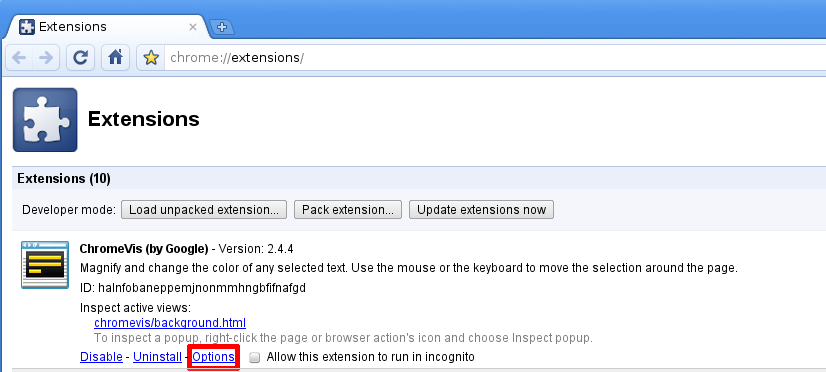
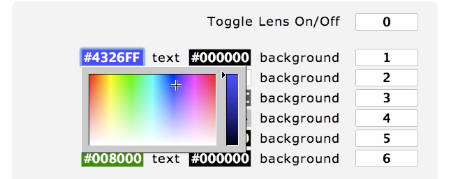
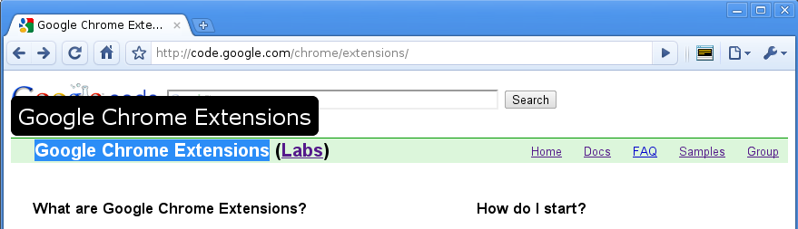
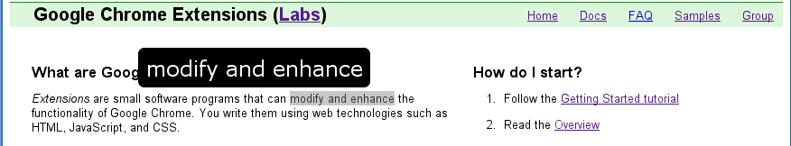

ChromeVis User Manual
Welcome to ChromeVis! This extension enables you to magnify and change the color of any selected text. You can use the mouse or the keyboard to move the selection around the page. This manual describes how to use ChromeVis.

Contents
- Using ChromeVis
- Customizing ChromeVis
- Uninstalling ChromeVis
- Current Issues
- Troubleshooting
- Submitting Feedback
- Lens Positioning Guide
Using ChromeVis
Select some text on a webpage. You can use the mouse or any of the selection keyboard shortcuts listed below to select page text. Then, click the ChromeVis icon  in the toolbar to open the lens. You can also press 0, which is the default keyboard shortcut to turn the lens on and off. Below is a screenshot of ChromeVis in action.
in the toolbar to open the lens. You can also press 0, which is the default keyboard shortcut to turn the lens on and off. Below is a screenshot of ChromeVis in action.
Keyboard Shortcuts
These keyboard shortcuts are the default shortcuts when you install ChromeVis. You can customize them by visiting the ChromeVis options page, described in the Customizing ChromeVis section. The options page lists the current keyboard shortcuts and allows you to restore the default shortcuts.
| 0 | Toggle the lens on and off |
Colors
The number keys 1 through 6 choose different color schemes. The following table displays the default keyboard shortcuts and the associated colors. Remember, you can always change the shortcut keys and colors on the ChromeVis options page.
| 1 | 2 | 3 | 4 | 5 | 6 |
Lens Style
The number keys 8 and 9 choose different lens position styles.
| 9 | Toggle between the anchored lens (which stays at the top of the page) and the floating lens (which appears near your selected text). |
| 8 | Toggle the floating lens between a centered alignment (which remains in the same place) and a justified alignment (which follows the beginning of your selected text) |
Magnification
| = | Make the text inside the lens bigger |
| - | Make the text inside the lens smaller |
Moving the Selection
These keyboard shortcuts move the text selection around the webpage automatically. Alternatively, you can always use the mouse to make a selection or modify a current selection.
| Shift + s | Move forward by a sentence |
| Shift + a | Move backward by a sentence |
| Shift + w | Move forward by a word |
| Shift + q | Move backward by a word |
| Shift + c | Move forward by a character |
| Shift + x | Move backward by a character |
| Shift + p | Move forward by a paragraph |
| Shift + o | Move backward by a paragraph |
Customizing ChromeVis
You can change any of the default keyboard shortcuts and lens colors on the ChromeVis options page. You can access the options page in two ways:
- 1) From the Extensions management page (accessible from the Tool menu -> Extensions or by typing "chrome://extensions" into the URL bar), find the listing for the ChromeVis extension and click the "Options" link, depicted below.

- 2) Open the right-click context menu on the ChromeVis icon in the toolbar and select "Options"
To specify your own shortcut, enter it into the text field next to the shortcut description. Then, press the "Save" button. Your new keyboard shortcut is automatically activated across all pages.
You can change lens colors by clicking in any of the colored boxes. This opens up a color picker where you can select a different color. This color picker is depicted below.

Alternatively, you can specify a color with your keyboard in hexadecimal notation.
You can get rid of any keyboard shortcut by deleting it from a text field and pressing "Save". To restore the default keyboard shortcuts, use the "Restore Defaults" button and then press "Save".
Uninstalling ChromeVis
You can uninstall ChromeVis at any time. There are two ways to uninstall the extension:
- 1) From the Extensions management page (accessible from the Tool menu -> Extensions or by typing "chrome://extensions" into the URL bar), find the listing for the ChromeVis extension and click the "Uninstall" link, depicted below.

- 2) Open the right-click context menu on the ChromeVis icon in the toolbar and select "Uninstall"
Alternatively, you can disable ChromeVis. This prevents it from loading on new pages, but keeps it in your Extensions management page so you can quickly re-enable it without having to go to the Extensions gallery. You can disable ChromeVis in the same way that you uninstall it, but click the "Disable" option instead.

Current Issues
- Text fields
- Keyboard shortcuts for moving selections do not function inside of text fields.
- Google Docs
- The lens will not display text selected in a document on Google Docs.
- Incognito Windows
- ChromeVis won't load in Incognito windows automatically. Incognito windows are browser windows that contain pages that won't appear in your browser history and won't leave cookies on your computer. You can change whether ChromeVis will load in Incognito by visiting your Extensions management page (accessible from the Tool menu -> Extensions or by typing "chrome://extensions" into the URL bar) and checking "Allow this extension to run in incognito", depicted below.

Troubleshooting
"ChromeVis isn't working - I can't move the selection or open the lens."
- Please note:ChromeVis does not work on the Chrome Extensions Gallery pages - all extensions are disabled across these pages. ChromeVis also does not work on internal chrome pages (where the URL starts with chrome:// ) or Incognito pages unless you have specifically enabled Incognito behavior (see the Current Issues section).
Otherwise, try reloading the page by pressing the reload button in the toolbar or pressing CTRL+R on your keyboard. If it still doesn't work, you can try restarting the Chrome browser. If after restarting ChromeVis still fails, please note the page or pages that ChromeVis isn't working on and submit feedback to the ChromeVis developers (see the Submitting Feedback section).
"I uninstalled ChromeVis but the lens is still there."
Reload the webpage by pressing the reload button in the toolbar or pressing CTRL+R on your keyboard.
"I want to disable ChromeVis only on one particular page."
Try opening that page in an Incognito window. You can open an Incognito window by pressing Shift+Ctrl+N or from the Tool Menu -> New Incognito Window. Of course, if you've specifically enabled Incognito behavior then this will not work.
Submitting Feedback
- There are two ways to submit feedback:
- 1) Post to the Axs-Chrome project discussion list. If you're having a problem with a particular page, please provide the URL of the webpage.
- 2) You can submit new bugs or feature requests on the Axs-Chrome Google Code site.
Lens Positioning Guide
The lens in the anchored position, which keeps it at the top of the webpage:
The lens in the floating position, which keeps it floating above selected text: 
The lens in the centered position, which keeps it centered above the paragraph of selected text: 
The lens in the justified position, which keeps it aligned with the selected text: